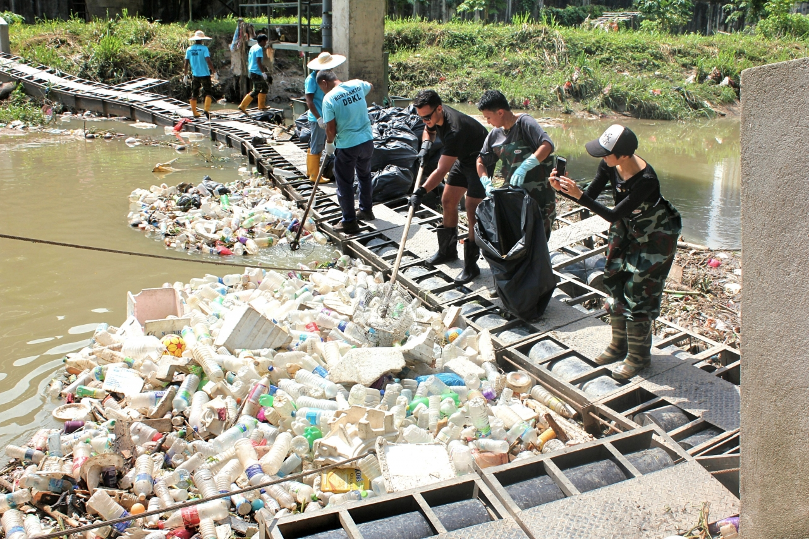

На просторах нашей огромной страны имеется множество водоемов. Ручьи и озера, реки и пруды, каналы, заливы и водохранилища - неотъемлемая и крайне важная часть экосистемы всей нашей планеты. Однако, данные статистики являются совсем неутешительными – множество водоемов не соответствуют даже самым «мягким» нормам по чистоте. Причин загрязнения водоемов множество, одним из них, и, наверное, основным, является антропогенный фактор.  На данный момент применяются 4 основных способа очистки: Механический (очистка русла реки, очистка озера дает возможность избавиться от излишнего количества растений и водорослей, ила, мусора); Химический (путем применения реагентов приводится к норме состав воды); Биологический (производится нормализация количества биогенных веществ в водоеме); Ультрафиолетовый (уничтожение бактерий, одноклеточных водорослей посредством ультрафиолетового излучения). Понятно, что применение методов очистки должно проводиться комплексно. Первым методом почти всегда рекомендуется использовать механический способ, ведь если дно водоема, русла реки не освободить от мусора, механических загрязнений, излишнего ила, то остальные способы очистки принесут лишь кратковременный, сравнительно недолгий эффект.